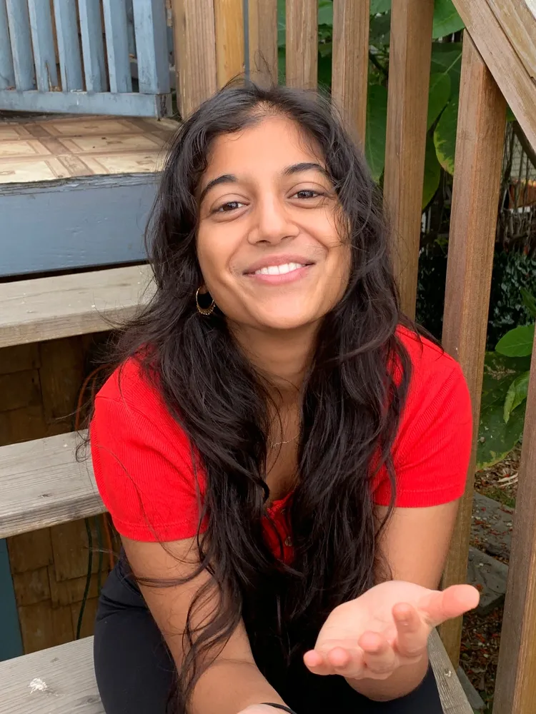

About Maya
Indian American screenwriter crafting stories that redefine beauty and challenge stereotypes.
View My WorkMy Journey
Maya Vyas is an Indian American writer who hails from Tipp City, OH — the loveliest land of cornfields you could ever drive through.
After receiving her BFA in Writing for Screen and Television from USC, Maya joined the CW's WALKER for two seasons. Following that, Maya co-wrote an episode of WE WERE LIARS (2025) and was staffed on LEVERAGE: REDEMPTION season three, both for Amazon Prime.
What Do I Write?
Stereotypes are my favorite things to dissect and prove and break – whether it's a brown girl who wants to be a leading lady, a short king who wants to be swept off his feet, or a group of pyramid-scheming housewives that are as vicious as any cartel.
I hope my work can bring marginalized communities closer and reshape the way we think of beauty – both inside and out.
Awards
- Stage 32 Short Film Grand Prize Winner – 2024
- Jon M. Chu Scholar at USC – 2021
- Humanitas College Comedy Award
- Scriptapalooza
- Disney Writing Fellowship
- Cape Writing Fellowship Semifinalist